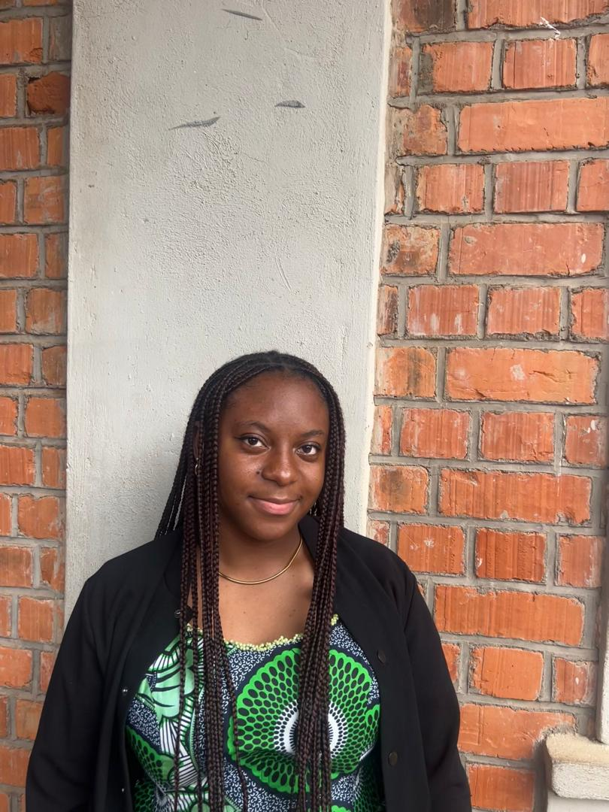

A Propos de Moi
Bonjour ! Je m'appelle Marie SUKAMA et je suis un étudiante passionnée en Informatique à l'Université Don Bosco De Lubumbashi . Passionnée par le reseau et l'anglais , je suis constamment en quete d'apprentissage.
Au cours de mes études, j'ai développé une passion pour la reseau. je suis une personne ambitieuse, créative et j'aime apprendre de nouvelles choses . Mon objectif est de pouvoir contribuer à des projets innovants pour l'avenir, et maitriser un domaine dans le reseau.
Mes Compétences
| CATEGORIES | COMPETENCES | NIVEAU |
|---|---|---|
| Design | Figma | Intermédiare |
| Progammation | Python,HTML | Intermédiare |
| Langues | Francais(natif),Anglais | Avancée |
| Outils | VS Code ,Git | Intermédiare |
| Soft Skills | Communication,Résolution de problèmes,Autonomie | Expert |